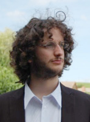
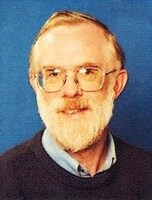

Computational Linguistics Lab Alumni

Petter Haugereid Associate Professor Department of Language, Literature, Mathematics and Interpreting, Western Norway University of Applied Sciences |

Mathieu Morey Research & Development Datactivist |
Wang Shan 王 珊 Assistant Professor Department of Chinese Language and Literature, University of Macau |

Wang Huizhen 王 会珍 Assistant Lecturer Natural Language Processing Lab, Northeastern University |
Bo Chen 陈 波 School of Computer Science, Wuhan University |
Song Sanghoun 宋 相憲 Assistant Professor Linguistics, Korea University |

Huang Min 黄 敏 Lecturer College of International Studies, Southwest University |

Umamaheswari Vasanthakumar Research Fellow EEE NTU |
Takayuki Kuribayashi 栗林 孝行 Research Associate Linguistics, NTU |
Graduates
|
Tan Liling 陈 立凌 M.A. (2012) Linguistics, NTU |

Lê Tuấn Anh M.Tech. (2013) Institute of Systems Science, NUS |
Zinaida Pozen M.S. (2014) Linguistics, The University of Washington |
|
Takayuki Kuribayashi 栗林 孝行 M.Eng. (2014) Electrical and Electronic Information Engineering, Toyohashi University of Technology |

Jim Breen Ph.D. (2018) Language Technology, The University of Melbourne |

Michael Goodman Ph.D. (2018) Linguistics, The University of Washington |

Elvis Albertus Bin Toni Ph.D. (2019) Linguistics, NTU |

David Moeljadi 莫 誠福 Ph.D. (2019) Linguistics, NTU |

Giulia Bonansinga M.A. (2019) Informatica Umanistica, Università di Pisa |

Fan Zhenzhen 范 真真 Ph.D. (2019) Linguistics, NTU |
Lê Tuấn Anh Ph.D. (2019) Linguistics, NTU |

Hannah Choi Yun Jung M.A. (2019) Linguistics, NTU |
Last modified: 2020-01-02
Computational Linguistics Lab (凡土研)
Francis Bond <bond@ieee.org>
Department of Asian Studies & Department of General Linguistics
Palacký University Olomouc · GitHub